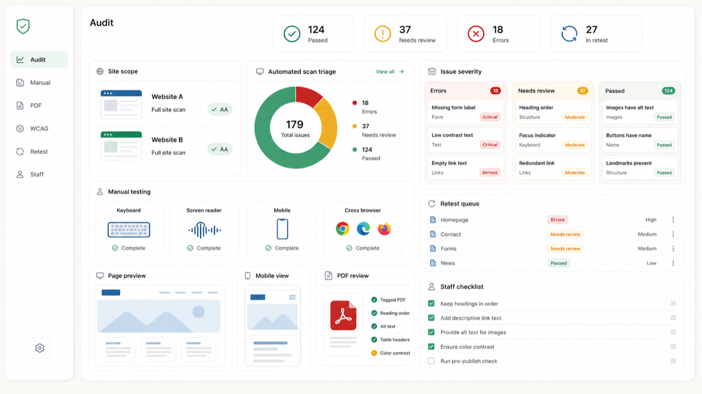

Audit triage
Representative page, template, mobile, form, and PDF checks with severity and likely owner.
RFQ 26-R08 / ADA Website Compliance
NVTA's RFQ asks for ADA website compliance support across public-facing websites and mobile views. My proposed slice is intentionally limited: QA triage, manual spot checks, document/PDF review, retest notes, and a staff publishing checklist that can sit beside full remediation work.

WCAG 2.2 AA Retest Staff ChecklistSuggested workflow
This support package is not a legal compliance guarantee. It is a practical QA and retest layer that helps NVTA see which issues were found, which were resolved, which remain open, and what staff should avoid reintroducing.
Limited fixed quote
This is a narrow independent support quote. If NVTA needs a full prime contractor for remediation and ongoing maintenance, this can support the selected vendor rather than replace that role.
Representative page, template, mobile, form, and PDF checks with severity and likely owner.
Issue list, evidence notes, retest result, open risk, and launch/readiness status.
Short checklist for headings, links, alt text, PDF uploads, contrast, forms, and pre-publish review.
Acceptance checks
Next step